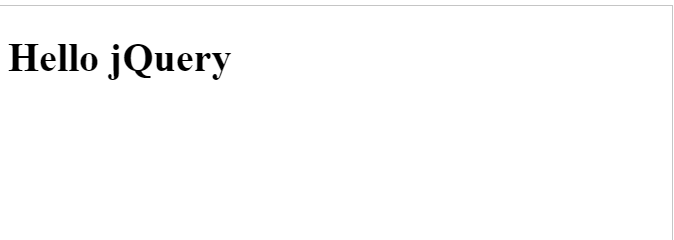
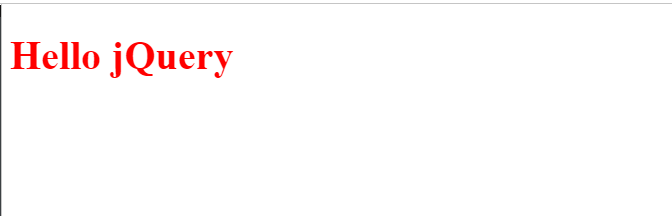

Contents
21.3.3. JavaScript库¶
JavaScript 框架（库）
JavaScript 高级程序设计（特别是对浏览器差异的复杂处理），通常很困难也很耗时。
为了应对这些调整，许多的 JavaScript (helper) 库应运而生。
这些 JavaScript 库常被称为 JavaScript 框架。
JavaScript 库 - jQuery、Prototype、MooTools。
jQuery
jQuery 是目前最受欢迎的 JavaScript 框架。
它使用 CSS 选择器来访问和操作网页上的 HTML 元素（DOM 对象）。
jQuery 同时提供 companion UI（用户界面）和插件。
许多大公司在网站上使用 jQuery：
Google
Microsoft
IBM
Netflix
Prototype
Prototype 是一种库，提供用于执行常见 web 任务的简单 API。
API 是应用程序编程接口（Application Programming Interface）的缩写。它是包含属性和方法的库，用于操作 HTML DOM。
Prototype 通过提供类和继承，实现了对 JavaScript 的增强。
提示：Prototype 框架最大的部分就是对DOM的扩展。通过Prototype框架里的$()函数能够返回一个网页DOM元素，框架给这个元素添加了很多方便的方法。
MooTools
MooTools 也是一个框架，提供了可使常见的 JavaScript 编程更为简单的 API。
MooTools 也含有一些轻量级的效果和动画函数。
提示：虽然Mootools跟Prototype几乎拥有一样的语法，但是它提供了比Prototype多的功能，而且更强大，拥有实用而清晰的文档和示例帮助你轻松入门。
其他框架
YUI - Yahoo! User Interface Framework，涵盖大量函数的大型库，从简单的 JavaScript 功能到完整的 internet widget。
Ext JS - 可定制的 widget，用于构建富因特网应用程序（rich Internet applications）。
Dojo - 用于 DOM 操作、事件、widget 等的工具包。
script.aculo.us - 开源的 JavaScript 框架，针对可视效果和界面行为。
UIZE - Widget、AJAX、DOM、模板等等。
实例1
<!DOCTYPE html>
<html>
<head>
<script
src="//libs.baidu.com/jquery/1.8.3/jquery.min.js">
</script>
<script>
function myFunction() {
$("#h01").html("Hello jQuery")
}
$(document).ready(myFunction);
</script>
</head>
<body>
<h1 id="h01"></h1>
</body>
</html>

实例2
<!DOCTYPE html>
<html>
<head>
<script
src="//libs.baidu.com/jquery/1.8.3/jquery.min.js">
</script>
<script>
function myFunction() {
$("#h01").attr("style", "color:red").html("Hello jQuery")
}
$(document).ready(myFunction);
</script>
</head>
<body>
<h1 id="h01"></h1>
</body>
</html>
